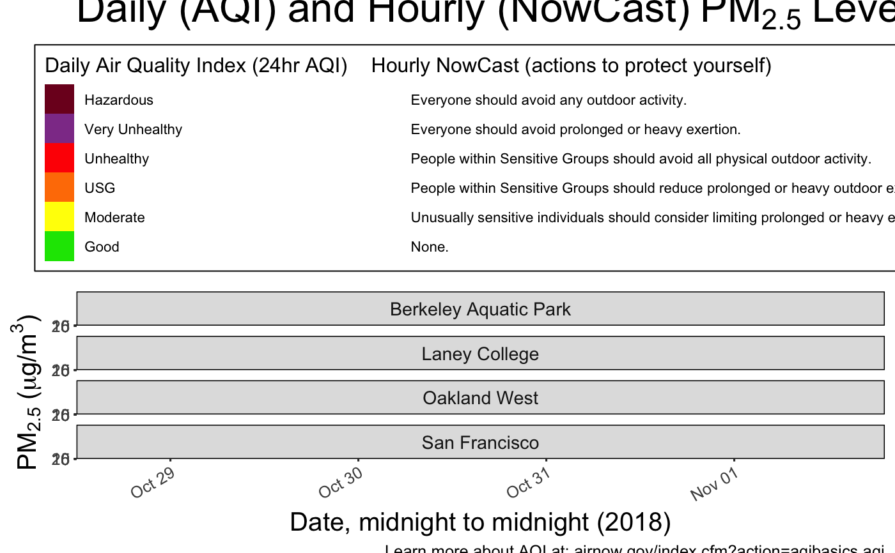
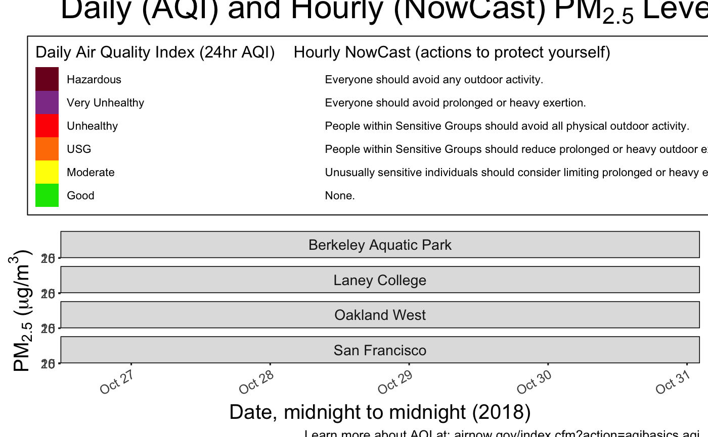

Create a time series barplot showing PM2.5 data for the given monitors. The overall plot is faceted by monitor, and each facet has two sets of columns: one for daily levels, and one for hourly levels.
dailyHourlyBarplot(ws_monitor, monitorIDs = NULL, tlim = NULL, columns = 1, title = NULL, xLabel = NULL, yLabel = NULL, includeLink = TRUE, hourlyDataType = "nowcast", palette = "epa_aqi", includeThirdCol = FALSE)
| ws_monitor | ws_monitor object. |
|---|---|
| monitorIDs | Optional vector of monitor IDs used to filter the data. |
| tlim | Optional vector with start and end times. Can either be a character/numeric vector in form of 'yyyymmdd', or a POSIXct object. Defaults to `NULL` (no subsetting). |
| columns | Number of columns the faceted plot should have (default 1). |
| title | The title of the plot. Defaults to specifying the types of data present in the plot. |
| xLabel | The x-axis label of the plot. Defaults to years present in data. |
| yLabel | The y-axis label of the plot. Defaults to PM2.5. |
| includeLink | Option to include a link to an AQI help page at the bottom of the plot (default `TRUE`). |
| hourlyDataType | The type of hourly data to include in the plot. The options include "nowcast" (hourly nowcast values), "raw" (raw hourly values), or "none" (no hourly data at all) (default "nowcast"). |
| palette | The ordered color palette used to represent each AQI category. Currently defaults to (and only accepts) "epa_aqi". |
| includeThirdCol | Option to include a third column in the legend. Currently in testing (default `False`). |
A **ggplot** plot of the given monitors and data.
SF_IDs <- c("060010011_01","060010013_01","060010012_01","060750005_01") SF_daily <- loadDaily() %>% monitor_subset(monitorIDs = SF_IDs) SF_latest <- loadLatest() %>% monitor_subset(monitorIDs = SF_IDs) SF_full <- monitor_join(SF_daily, SF_latest) today <- lubridate::floor_date(lubridate::now('America/Los_Angeles'), unit='day') now <- lubridate::floor_date(lubridate::now('America/Los_Angeles'), unit='hour') starttime <- today - lubridate::ddays(4) SF_4day <- monitor_subset(SF_full, tlim=c(starttime, now)) # Create plot using pre subset data dailyHourlyBarplot(SF_4day, SF_IDs)#> #> #>#> Warning: Removed 24 rows containing missing values (position_stack).# Create plot using data subset by function dailyHourlyBarplot(SF_full, SF_IDs, tlim = c(starttime, now))#> Warning: Removed 20 rows containing missing values (position_stack).